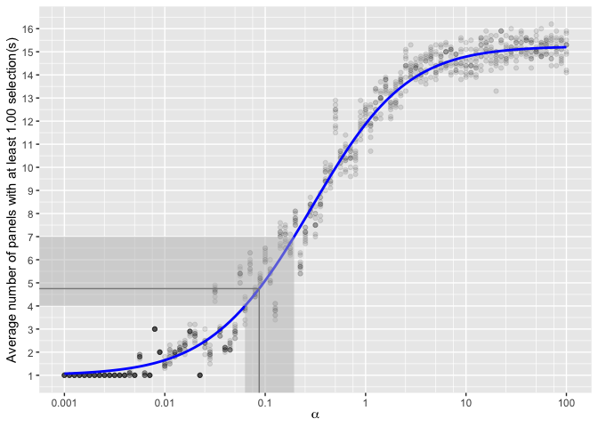

The goal of vinference is to assist with the design and analysis of visual inference experiments.
For more information on visual inference, check out the nullabor R package or Wickham et al. (2010).
Installation
vinference is not yet on CRAN; you can install the development version from GitHub with:
# install.packages("devtools") devtools::install_github("heike/vinference")
Example
In visual inference, we can run experiments under 3 scenarios:
- Scenario 1: in each of K evaluations a different data set and a different set of (m-1) null plots is shown.
- Scenario 2: in each of K evaluations the same data set but a different set of (m-1) null plots is shown.
- Scenario 3: the same lineup, i.e. same data and same set of null plots, is shown to K different observers.
To calculate a p-value for a set of 20-panel single-target lineups generated under Scenario 1 where the data plot was selected 10 times out of 30 observations,
pVis(10, K = 30, m = 20, scenario = 1, lower.tail = F) #> [1] 1.161521e-06
Under Scenario 3, however, we would use the same 20-panel single-target lineup and have 30 different participants evaluate it. Because we are using the same panels for each participant evaluation, there is dependence between the evaluations of different participants and we must account for this using a parameter α which provides information about the level of visual interest of the null panels. See XXX Stat paper citation for more information.
Suppose, for now, we know α ≈ 0.1. Then our p-value for the lineup would be
pVis(10, K = 30, m = 20, scenario = 3, alpha = 0.1, lower.tail = F) #> [1] 0.2232121
Probability (dVis) and quantile (qVis) functions are also available.
As discussed in XXX Cite stat paper XXX, we need to estimate the hyperparameter α, which describes the number of visually interesting null plots generated by the null model.
This approach is appropriate when you have several single or dual target lineup evaluations with similar (non-zero) number of null panel selections. Eliminate target panel selections and work with the remaining K total null panel selections and a m0 equal to the number of null panels. Determine how many selections c are required for a panel to be considered interesting (by default, we recommend K/m0). Using your values for c, K and m0, the estimate_alpha_visual function will create a plot with the expected number of null panels selected at least c times; simulated experiments will be plotted around the line to provide some measure of variability.
estimate_alpha_visual(m0 = 19, K = 30, c = 1)
If you have experimental data available, there is an additional function which may assist you with visual estimation: observed_band. The observed band function leverages an average number of panels or a range of panels to add additional cues to the plot. Suppose that we have several lineups which have K ≈ 30 evaluations; between 4 and 7 panels were selected in each lineup, with an average of 4.75 panels selected.
estimate_alpha_visual(m0 = 19, K = 30, c = 1) + observed_band(4.75, c(4, 7)) #> Warning: Transformation introduced infinite values in continuous x-axis #> Warning: Transformation introduced infinite values in continuous x-axis
 Using this cue, values of α between 0.075 and 0.12 might be most appropriate, with the best numerical estimate around α = 0.1.
We can then examine whether our p-value of 9.67049710^{-4} corresponding to α = 0.1 results in a similar conclusion for all plausible α values in our observed range. At α = 0.0175, the corresponding p-value is 0.0015002. At α = 0.012, the corresponding p-value is 6.642673610^{-4}. In both cases, our lineup plot is significant, and we come to the same conclusion: the target plot is a significant visual statistic.